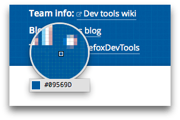

The Eyedropper is new in Firefox 31.
The Eyedropper tool enables you to select colors in the current page. It works like a magnifying glass over the page, enabling you to select with pixel precision. Underneath the magnifying glass it shows the color value for the current pixel using whichever scheme you've selected in Settings > Inspector > Default color unit:
You can use it in one of two ways:
Open the Eyedropper in one of these two ways:
As you move the mouse around the page you'll see the current color value in the Eyedropper change. Clicking copies the current color value to the clipboard.
{{EmbedYouTube("xf2uk6UyRB8")}}
Color values appearing in the Inspector's Rules view have color samples next to them: clicking the sample shows a color picker popup. From Firefox 31, the popup contains an eyedropper icon: click this icon to activate the Eyedropper.
Now, when you click the Eyedropper, the color in the Rules view is set to the color you selected.
{{EmbedYouTube("0Zx1TN21QOo")}}
{{ Page ("en-US/docs/tools/Keyboard_shortcuts", "eyedropper") }}